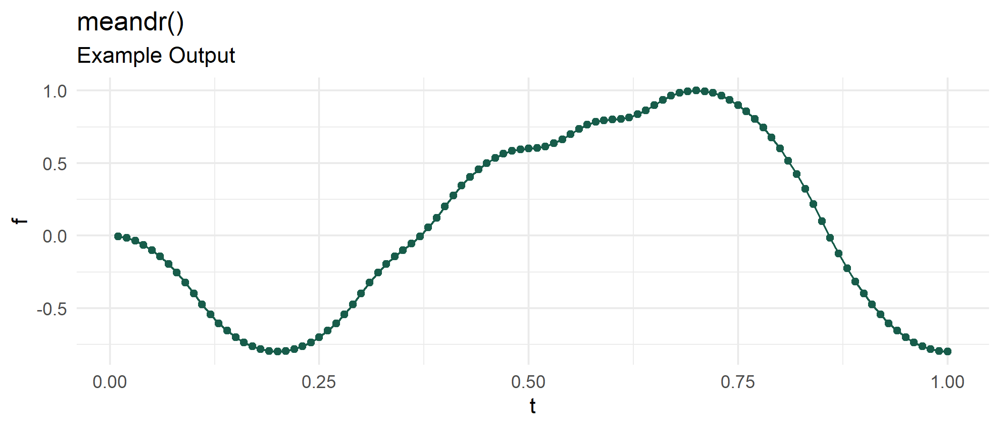

meandr allows for easy generation of coordinates that are random, yet continuously differentiable. This is particularly useful for simulating time-series measurements of physical phenomena that maintain a clear local trajectory.
Installation
devtools::install_github("sccmckenzie/meandr")
Why meandr?
Suppose we want to simulate behavior of a “somewhat random” time-series phenomenon.
- Outdoor temperature
- Train station crowd density
- Stock price
Although we can’t predict the exact values of these examples, we know how they will behave to a certain extent. For instance, outdoor temperature is not going to drop by 100 degrees in 1 second.
We could use method #1 below:
method_1 <- data.frame(t = 1:100, f = rnorm(100))

The above data doesn’t exhibit any prolonged directional consistency. This may not adequately emulate the character of the above examples.
meandr offers a solution to this problem. Each call to meandr() generates a unique tibble of t and f coordinates. For reproducibility, a seed argument is provided.
library(meandr) df1 <- meandr(n_points = 100, n_nodes = 20, seed = 2) df1 #> # A tibble: 100 x 2 #> t f #> <dbl> <dbl> #> 1 0.01 -0.00400 #> 2 0.02 -0.0160 #> 3 0.03 -0.0360 #> 4 0.04 -0.0640 #> 5 0.05 -0.100 #> 6 0.06 -0.144 #> 7 0.0700 -0.196 #> 8 0.08 -0.256 #> 9 0.09 -0.324 #> 10 0.10 -0.400 #> # ... with 90 more rows

Observe df1 curve trajectory never radically changes between two points. This is a key feature of meandr: all curves are continuously differentiable.